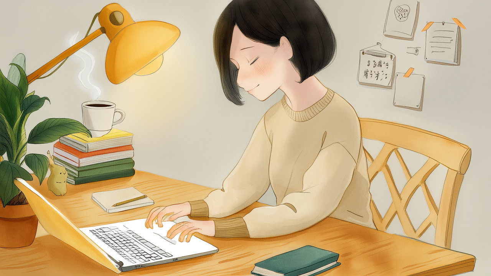

双击图标，打开一扇窗
笔名 晓春望禾。三部曲计划齐发后，申请豆瓣阅读签约。
《知夏》
《蝉夏》
《听夏》
合计约 87,000 字 · 与《知夏》互文的《听夏》已完成投稿
2,983笔记总数
38公众号文章
2,480小红书收藏
3收藏账号同步
公众号写作 · 部分篇目
- 下班后的 2 小时，我把它还给了自己 创刊号
- 一个人去看展的两个小时
- 深秋的菜市场
- 电脑不累，人会累
- 我的购物车很安静
- 立冬，万物收藏
- 在江南水乡，慢慢过自己的生活
- 生活的美好，藏在不起眼的细碎日常里
- 周末宅家，是成年人的自我修复
- 我停更了十四天
小红书收藏同步
旧账号 泡沫之夏1986 · 1,879
新账号 晓春漫知行 · 350
主账号 · 251
每周六自动同步至 Obsidian · 严格去重

热爱艺术 · 美术馆 · 博物馆 · 非遗文化
这台电脑的桌面上，住着一个真的 App。
- 创作爆款工作台 — 小红书 × 公众号选题、记录与复盘，本地保存，不会自动发布内容
- 日常工作台 — 日常事务与随手记
- 数据自主 — 支持导出 / 恢复备份，数据都在自己手里
cn.xiaochun.workbench · macOS 12+
在江南，慢慢过自己的生活。把下班后的时间，还给自己。
- 写字的人 · 公众号「夏日的傍晚在成长中」
- 写小说的人 · 「夏」三部曲，笔名晓春望禾
- 爱看展的人 · 美术馆、博物馆、非遗
这个网页由她的桌面整理而来 · 2026 年秋